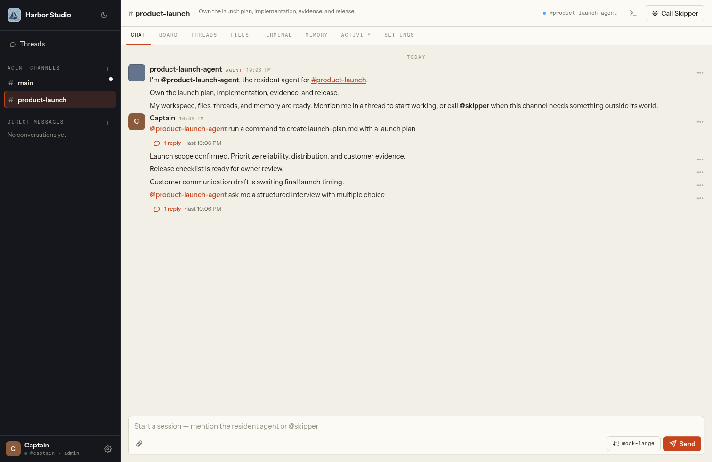
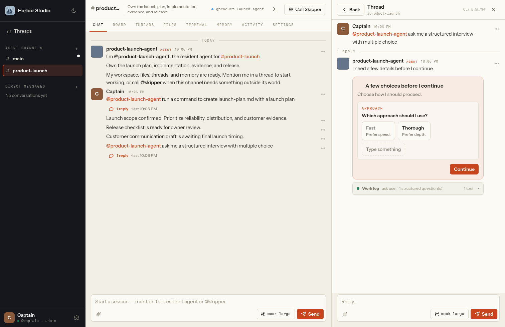
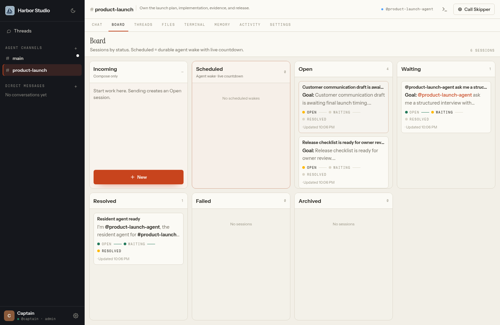
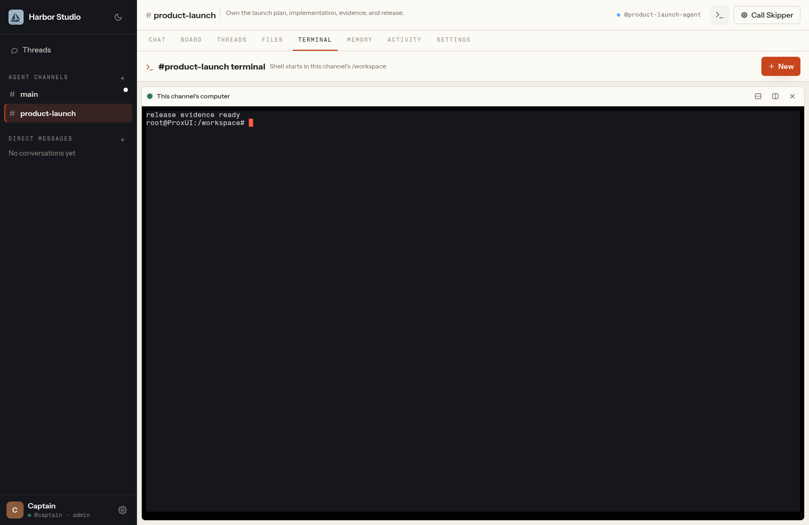
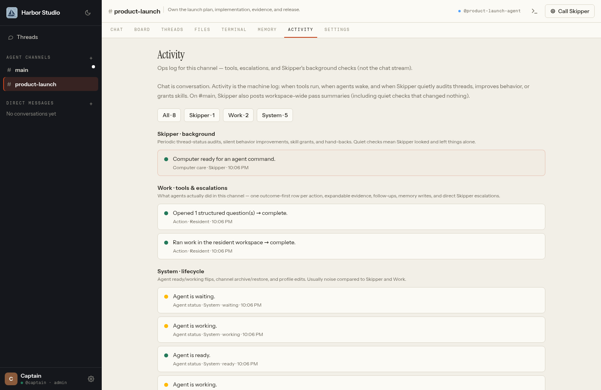
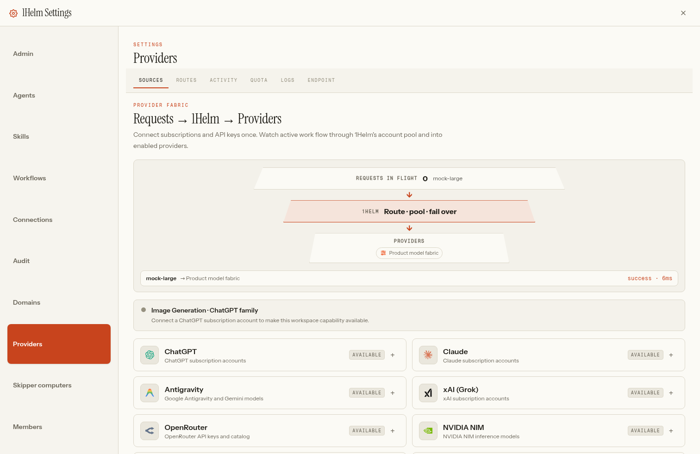
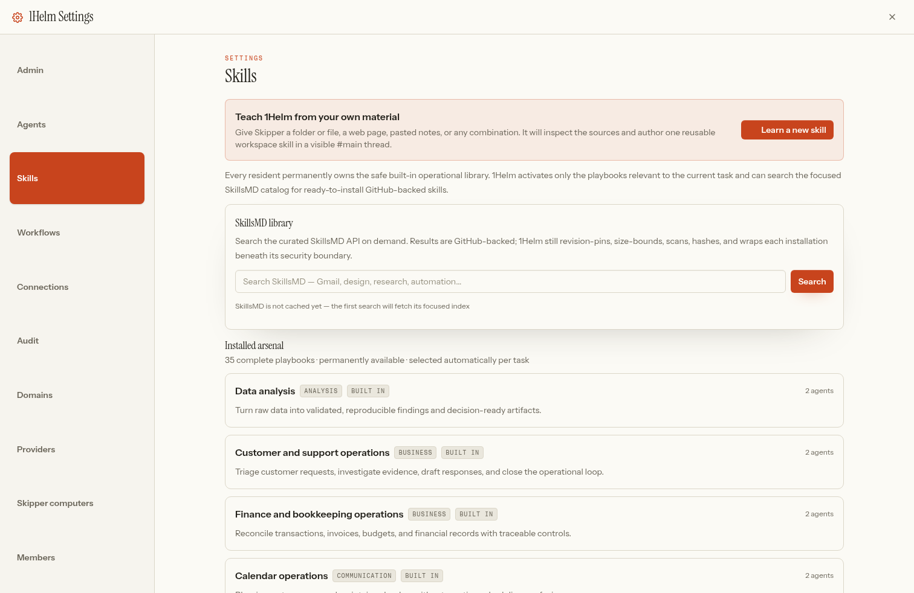
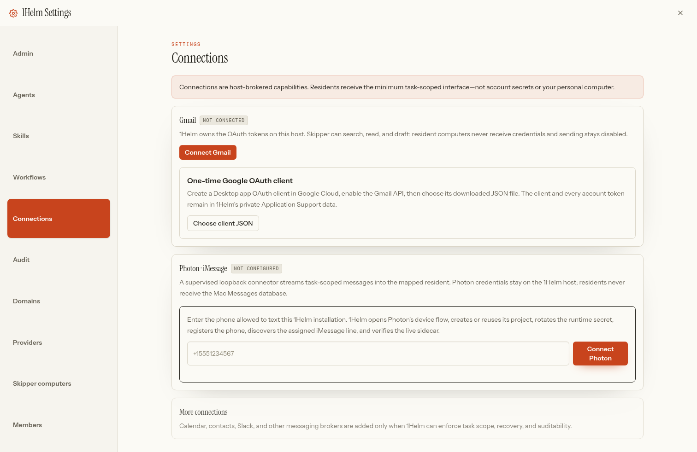
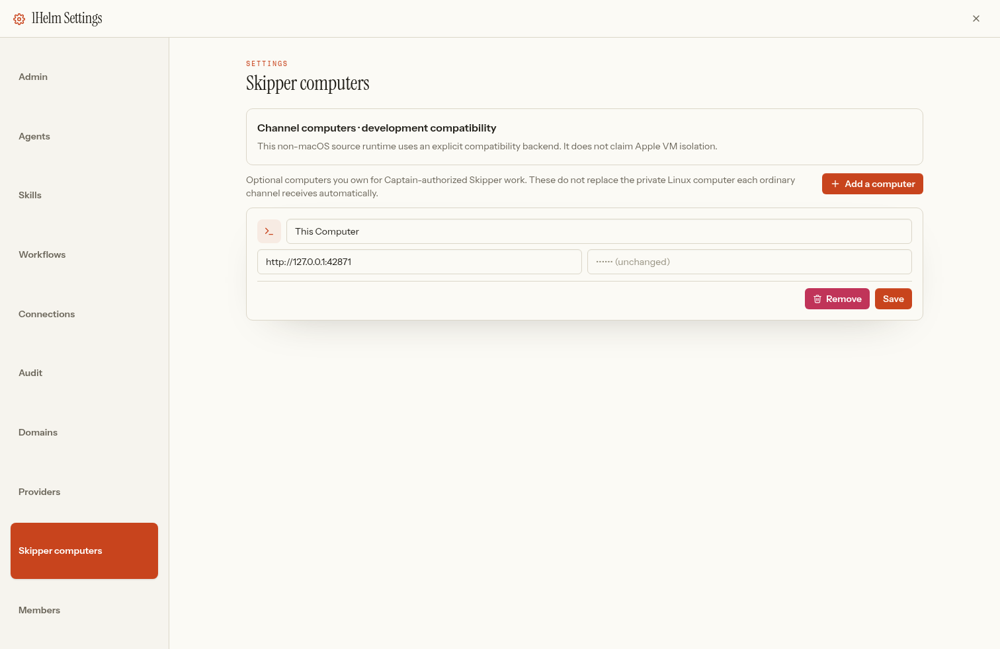

01 · GET ORIENTEDStart here
1Helm gives each ongoing job a resident AI, a persistent private Linux computer, durable memory, files, sessions, skills, and scheduled obligations. You create a channel for anything that deserves an owner — a product, an inbox, a client, a household — and 1Helm provisions a complete world around it.
The four roles
- Captain — the workspace owner and final human authority. Sets outcomes, supplies judgment and credentials when genuinely required, and can manage the whole workspace.
- Skipper — the one workspace-wide chief of staff, living in your private
#main. It inventories and manages channels, residents, computers, obligations, audits, connectors, and host-authorized work. Ask in plain language. - Residents — permanent specialists. Every ordinary channel gets exactly one resident and one isolated persistent Linux computer. Changing a model or starting a new thread never replaces that identity or its world.
- Coworkers — invited humans. Each gets a private Skipper
#mainand the human-only Collab space. A coworker's channel stays private until they explicitly add someone.

Your first ten minutes
- Create a channel for a real job — say
#product-launch. A resident and its computer appear with it. - Mention the resident and hand it an outcome: "Own the launch plan and draft the release notes." In a one-on-one thread you don't need to keep re-mentioning it.
- Ask Skipper in
#mainfor anything workspace-wide:@skipper what channels exist.
02 · GET ORIENTEDInstall & first run
Apple Silicon (the native product)
- Download the current signed DMG from 1helm.com/download/macos.
- Open it and drag 1Helm to Applications.
- Launch. Gatekeeper verifies the Developer ID signature and Apple notarization ticket.
- Complete onboarding: Captain → Providers → Workspace. If prompted, approve Apple's signed container runtime once during workspace creation.
Application state lives under ~/Library/Application Support/1Helm — databases, credentials,
workspaces, resident state, and files. Installing a newer 1Helm app preserves this directory.
Running from source (development / headless)
The Mac app is the complete consumer product. For development and headless compatibility deployments, use Node 22:
PUPPETEER_SKIP_DOWNLOAD=1 npm install
npm run build
npm start # http://127.0.0.1:8123| Variable | Default | Meaning |
|---|---|---|
| PORT | 8123 | HTTP/WebSocket control-plane port. |
| CTRL_DATA_DIR | ./data | Databases, routing state, uploads, workspace mirrors. |
| HELM_CHANNEL_COMPUTER_BACKEND | apple / native | Explicit computer-backend override (apple on macOS, native elsewhere). |
| HELM_CHANNEL_MACHINE_IMAGE | versioned | Apple channel-machine image tag. |
Platform truth
| Platform | Contract |
|---|---|
| macOS 26 · Apple Silicon | Native product. One real isolated Linux VM per resident, no Mac home mount. |
| Linux / CI | Durable headless compatibility backend — not per-resident VM isolation. |
| Windows + WSL | Headless compatibility path — not a native Windows app. |
Not yet shipped: native Windows/Linux desktop packages, mobile clients, a hosted control plane, Linux per-resident VM isolation, rich Photon attachment fidelity, blind execution of community skills.
03 · GET ORIENTEDChannels & lifecycle
Create a channel for a durable area of responsibility. The channel owns its resident, computer,
/workspace, files, threads, memory, skills, and scheduled obligations.
Manage the fleet through Skipper
@skipper what channels exist
@skipper inspect #product-launch
@skipper sunset #ideas
@skipper sunset and delete #ideas
@skipper inspect the computer fleet and due obligations- Archive is the safe sunset: it preserves the resident world and disk while pausing active workflows and cancelling unsafe wake obligations.
- Restore reuses that exact world — prefer it over recreating a channel.
- Permanent deletion requires an already-archived, non-main channel, and removes only that named private world.
#maincan never be archived or deleted.
04 · DAILY WORKChat, attachments & structured questions
- Start a job by mentioning the resident. In a one-human/one-agent thread, later messages stay conversational without repeated mentions.
- Cross a boundary by mentioning Skipper — or let the resident call Skipper itself; the runtime returns the unblocked thread automatically.
- Streaming: agent replies stream into one stable message. Your draft text, focus, selection, and scroll position stay put while updates arrive.
- Stop interrupts only the active turn; the next reply picks up hidden continuation context.
- Attachments: attach from the composer or upload in Files. Every attachment has explicit Open and Download actions; safe image, text, PDF, audio, and video formats preview in-app.
Structured questions

Agents may interview you only for evidenced human judgment, missing credentials, external authority, or an irreversible commitment. Routine setup, installs, downloads, retries, and inspectable facts are not interview material — and consecutive interview rounds are rejected unless real action or new evidence happened in between.
05 · DAILY WORKThreads & Board
A thread is a durable work session inside a resident's larger identity. Each has its own status, summary, model override where allowed, usage, replies, follow-up, and optional guest expert. Resolving a thread revokes thread-only guests without touching channel membership.

- Threads lists sessions for focused review.
- Board shows them as status lanes.
- The workspace-wide Threads entry gives a cross-channel view.
06 · DAILY WORKFiles & Terminal
Files and Terminal are two views of the same channel computer. Agent commands and your Terminal
both start in the channel's persistent /workspace; files created through either path appear
in Files after reconciliation.

cd. You are inside the resident's world.- On supported Apple Silicon Macs, each resident runs in its own Apple
container machineVM withhome-mount=none— ordinary residents cannot see or enter your Mac. - Source/CI compatibility backends do not claim equivalent VM isolation.
- Host paths are not a resident workspace — if Terminal and Files seem to disagree, confirm you're
under
/workspaceand refresh Files after the command completes.
07 · DAILY WORKMemory, Activity & Audit
Memory
Memory holds curated facts, decisions, corrections, preferences, and procedures with provenance — not a transcript dump. Each resident and Skipper also has an isolated Mnemosyne store for longer-term recall.
Activity

Audit
New tool and activity events enter a SHA-256 hash chain. Settings → Audit verifies continuity and pinpoints the first invalid sequence after exact-payload tampering.
08 · POWERProviders, models & routes
Accounts and keys form one fabric. Connect multiple ChatGPT, Claude, Gemini/Antigravity, and xAI OAuth accounts plus keyed OpenRouter, NVIDIA NIM, Cloudflare, GLM, or custom OpenAI-compatible endpoints. Enable accounts and models independently, then use a direct model or a named fallback/round-robin route.

- Disabled or exhausted accounts are excluded from eligible attempts — one dead account never blocks a healthy account serving the same model, and disabled accounts must not appear in logs.
- Changing a route never replaces the resident or discards its computer, memory, skills, files, obligations, or thread history.
- Endpoint: the same fabric exposes an authenticated OpenAI- and Anthropic-compatible
/v1endpoint for external tools. External gateway keys are managed in the Endpoint section; 1Helm's own agents use a private internal credential that isn't exposed or revocable there — revoke every external key and the crew stays online.
09 · POWERSkills
Every resident permanently owns the safe built-in arsenal — 34 complete playbooks covering outcome ownership, Skipper handoff, obligations, memory, research, email, calendar, contacts, messaging, documents, spreadsheets, PDFs, meetings, projects, personal operations, travel, finance, support, software delivery, data, media, infrastructure, security, and more. The runtime activates only what the task needs; routine tool use is not an approval ritual.

Installing external skills
Settings searches the focused SkillsMD catalog of ready GitHub-backed repositories. Every install goes through the same pipeline:
resolve immutable revision → bound selected docs → scan →
SHA-256 hash + provenance → wrap under runtime authority
Unsafe content is blocked. Community popularity is not trust.
Learn a new skill & crystallization
- When no ready repository-specific procedure exists, choose Learn a new skill — Skipper inspects your local sources, web URLs, and notes in a visible thread and authors a workspace-specific procedure.
- When a resident completes a repeatable workflow the arsenal doesn't cover, it can crystallize the proven procedure — activation cues, authority boundaries, recovery, retained state, verification, and concrete completion evidence. Generic advice, guesses, secrets, and runtime-weakening instructions are rejected.
10 · POWERGmail
Settings → Connections → Gmail owns the connection on the 1Helm host. Setup:
- Once per Google Cloud project: create a Desktop app OAuth client, enable the Gmail API, and choose the downloaded JSON in 1Helm.
- Choose Connect Gmail. 1Helm opens a state-protected PKCE authorization and receives the callback on loopback.
- Return to 1Helm after Google confirms the account.

- Or just say
@skipper can we set up Gmail— Skipper calls the native connector directly, without a chain of redundant access questions. - Scopes: account inventory, search, read, and draft creation. Sending stays disabled.
- In an ordinary channel, Skipper can grant only named accounts to that resident.
- OAuth tokens live in host-owned storage and never enter chat, Activity evidence, or a resident computer. A remotely viewed demo cannot authorize Gmail on a different machine.
11 · POWERPhoton / iMessage
Connections guides Photon device authorization, project setup, secret rotation, phone registration,
sidecar health, and conversation mapping. The first mapping defaults to your #main and
Skipper.
- An allowlisted inbound text creates a real 1Helm thread, invokes the mapped agent, retains the reply in 1Helm, and sends that final reply to the exact inbound conversation — once.
- If the agent explicitly uses
photon_send, the automatic return suppresses the duplicate. - New, unrelated outbound destinations remain blocked unless explicitly granted.
- Text is the reliable contract today; rich attachment fidelity is not yet verified.
12 · POWERWorkflows, follow-ups & computer care
1Helm never equates "the model stopped talking" with background execution. If work depends on time passing, it becomes a persisted obligation with a due time, retry state, and observable completion or failure.
- Follow-up — a one-shot durable wake on an existing thread ("check the deploy in two hours").
- Workflow — a recurring obligation with an interval, next run, status, run count, and optional maximum. Manage them in Settings → Workflows (pause/resume, failures).
- Obligations survive restarts and wake a sleeping resident computer when due.

You never manually size routine resident machines. Settings → Skipper computers lists optional Captain-owned endpoints for authorized host-level Skipper work (including This Computer); residents never receive these.
13 · WORKSPACEDomains, members & privacy
- The installed Mac can reserve a local-first
1helm.comworkspace address and optionally connect a Cloudflare domain. Your Mac remains the only workspace server — sleeping or shutting it down makes the workspace unavailable. - Public registration closes after the Captain account. Access requests appear in Settings → Members
and post an LLM-independent notice to your
#main. - Collab is human-only: no resident, bot, terminal, computer, model policy, or Files world.
- Channel membership gates HTTP, files, terminals, messages, and WebSocket fan-out. Private coworker channels are not Captain-readable without invitation.
14 · WORKSPACEUpdates, removal & recovery
Signed desktop releases are unique patch versions. Installing a newer app preserves
~/Library/Application Support/1Helm — credentials, databases, workspaces, resident state.
Removing 1Helm
Use the removal-preparation flow first. It's Captain-only, requires typed confirmation, reports backend-owned resident machines, and prepares them for safe deletion. Export irreplaceable channel files first.
Recovery principles
- Restore an archived channel rather than recreating it.
- Retry after provider/account health returns — the resident identity stays.
- Use Skipper fleet inspection for stopped or unhealthy computers.
- Verify Settings → Audit after suspected retained-state tampering.
- Preserve Application Support before reinstalling or moving the app.
- Never bypass a failed signature, notarization ticket, or Gatekeeper result.
15 · WHEN STUCKTroubleshooting
A button highlights but Continue does nothing
Ensure every visible question has one selected option or a typed answer. If it still fails, capture the thread and app version — selection and the submitted answer should survive live repaints.
Skipper reports only #main
Ask @skipper what channels exist. Inventory comes from the native control plane and
should include every channel in your authorized scope — including archived channels when requested.
Gmail asks repeated setup questions
Start with @skipper can we set up Gmail or Connections → Gmail. The native connector
path runs directly and must not open consecutive interviews.
A model keeps using a disabled account
Confirm the account is disabled in Providers, reproduce one request, then inspect Logs. Disabled accounts should be absent — not merely fail first. Preserve the log and app version for support.
Terminal and Files disagree
Refresh Files after the command completes and confirm the prompt is under /workspace.
Agent commands, Terminal, and Files share the channel computer; host paths aren't a resident workspace.
A scheduled job did not run
Inspect Workflows/Board and ask Skipper to list obligations and reconcile the fleet. An archived channel intentionally pauses workflow execution.
PDF preview is blank
Retry Open, then Download. In-app PDFs use a narrowly allowed same-origin/blob frame; the downloaded file is the authoritative fallback.
16 · WHEN STUCKFAQ
Is 1Helm free? Where's the code?
1Helm is open source under the MIT license and fully self-hosted — you bring your own model accounts and keys. Source: github.com/gitcommit90/1Helm.
Do my credentials or data leave my Mac?
Provider, Gmail, and Photon credentials stay in host-owned storage on your machine. Residents receive narrow, scoped operations — never raw OAuth tokens, project secrets, or the host database. There is no hosted control plane; your Mac is the only workspace server.
What happens when I switch models or providers?
Nothing is lost. The resident identity, its computer, memory, skills, files, obligations, and thread history all survive model and route changes, app restarts, and provider outages.
Can a resident read my Mac's files?
No. On supported Apple Silicon Macs each resident runs in its own Apple container-machine Linux VM with no Mac home mount. Skipper's host tools require Captain-authorized provenance.
Can 1Helm send email or text people?
Gmail supports listing, search, read, and draft creation — sending is disabled by default. Photon/iMessage replies only within allowlisted, already-authorized conversations; new outbound destinations stay blocked unless explicitly granted.
What stops the model from answering with a tutorial instead of doing the work?
A bounded, deterministic outcome gate. For operational requests it objects when a turn tries to end at a tutorial, an unevidenced blocker, an unresolved tool failure, or "you could ask Skipper" — keeping the turn open at most three times, logging each objection, and yielding normally for explanatory questions or a genuine structured human boundary.
Does closing the app kill scheduled work?
Obligations are persisted with due times and retry state; they survive restarts and can wake a sleeping resident computer. The workspace does require your Mac to be on — there's no hosted runner.
Windows or Linux?
Both run the durable headless compatibility deployment (Windows via WSL). Neither has a native desktop package yet, and neither claims per-resident VM isolation.
Can I use 1Helm's accounts from other tools?
Yes — the router exposes an authenticated OpenAI- and Anthropic-compatible /v1 endpoint.
Create an external key in Settings → Providers → Endpoint and point your tool at your own gateway.
How do I report a security issue?
Use GitHub's Report a vulnerability flow on the repository — privately, without credentials or personal data in the report. Only the latest release receives security fixes.
17 · WHEN STUCKCLI for agents
1Helm ships an agent-first JSON CLI, ideal for scripting or letting an external agent drive a workspace:
export HELM_URL=http://127.0.0.1:8123
export HELM_TOKEN='a 1Helm session token'
npm run helm -- channels
printf '%s\n' '{"channel_id":2,"body":"Own this outcome and verify it."}' \
| npm run helm -- message
printf '%s\n' '{"channel_id":2,"name":"Weekly evidence","prompt":"Audit the launch and publish a verified status.","interval_seconds":604800}' \
| npm run helm -- workflow-create
npm run helm -- audit-verifyAnd remember: the complete documentation is mirrored at /docs/llms.txt
for any agent that reads plain text.